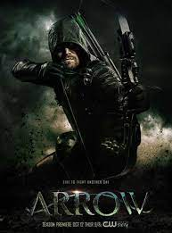
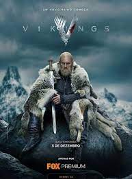
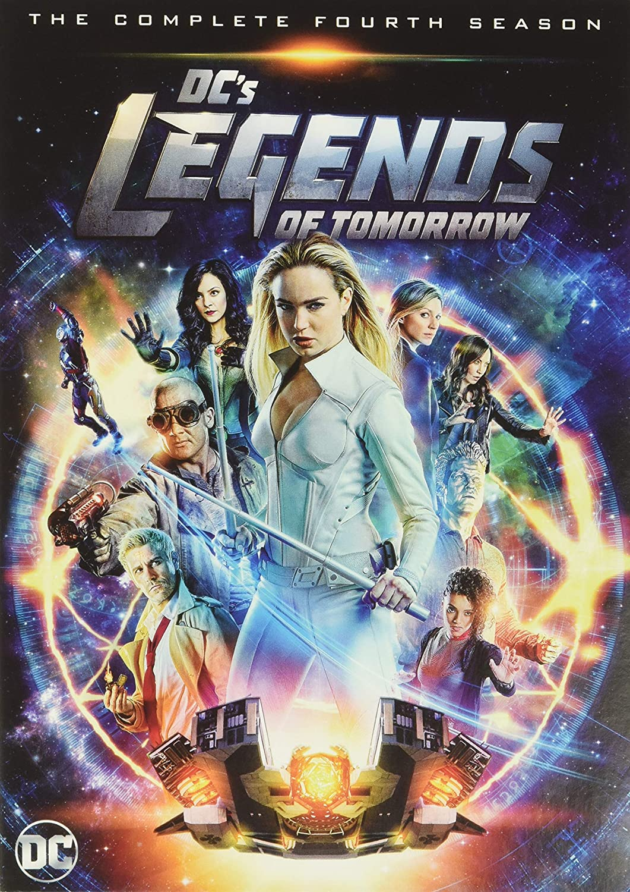

Após um violento naufrágio, o playboy milionário Oliver Queen é dado como morto.
Cinco anos depois, é resgatado de uma ilha do Pacífico e enviado de volta para Star City,onde passa
a agir como vigilante secreto.
Elenco:
Stephen Amell, David Ramsey, Emily Bett Rickards, Katie Cassady.
Vikings

A série acompanha a saga dos navegadores nórdicos que exploram - e conquistam
- novos territórios nos tempos medievais.
Elenco:
Travis Fimmel,Katheryn winnik,Cliven Standen,Alexander Ludwig
Sherlok Homes
Sherlock Holmes é um personagem de ficção
da literatura britânica criado pelo médico e escritor Sir Arthur Conan Doyle. Holmes é
um investigador do final do século XIX e início do século XX. Sua primeira aparição foi
em 1887 na revista Beeton's Christmas Annual na história Um Estudo em Vermelho.
Elenco:
Benedict Cumberbatch, Martin Freeman, Mark Gatiss, Andrew Scott, Rupert Graves, Loise Braeley.
Legend's Of Tomorrow

Após ter visto o futuro, o viajante do tempo Rip Hunter
recebe a missão de montar um grupo eclético de heróis e vilões
para confrontar uma ameaça invencível - uma que não somente põe
em risco o planeta, mas também o tempo.
 Sherlock Holmes é um personagem de ficção
da literatura britânica criado pelo médico e escritor Sir Arthur Conan Doyle. Holmes é
um investigador do final do século XIX e início do século XX. Sua primeira aparição foi
em 1887 na revista Beeton's Christmas Annual na história Um Estudo em Vermelho.
Sherlock Holmes é um personagem de ficção
da literatura britânica criado pelo médico e escritor Sir Arthur Conan Doyle. Holmes é
um investigador do final do século XIX e início do século XX. Sua primeira aparição foi
em 1887 na revista Beeton's Christmas Annual na história Um Estudo em Vermelho.